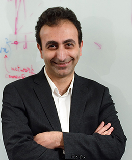

Omics Integration and Personalized Medicine

Data Integration with MathIOmica and PyIOmica. (mathiomica.org)

Microbiome metabolomics

Our personalized medicine investigations extend the concepts of precision medicine to the individual, assessing multiple omics during longitudinal profiling.

Omics analyses and integration requires extensive processing. MathIOmica and PyIOmica provide a user-friendly framework for handling downstream analysis and visualization.

Creating models necessitates robust omics datasets, particularly for time series analyses and network inference. We are creating multiple such sets available to the community.

Professor Mias joined MSU in 2014, conducting research in Personalized Medicine and Individualized Wellness. He is currently Chief of the Division of Systems Biology (Organization of Life), at the Institute for Quantitative Health Science and Engineering (IQ Center), and an Associate Professor of Biochemistry and Molecular Biology, an Adjunct Professor of Physics and Astronomy and of Pediatrics and Human Development.
The current research of the G.Mias lab focuses on the analysis and integration of existing (and developing) -omics technologies, their application to monitoring individuals as they transition through various physiological states, and their implementation towards personalized health. Professor Mias’ received funding through an NIH Pathway To Independence Award (K99\&R00) from the National Human Genome Research Institute. He is interested in systems medicine and particularly focusing on future implementation of personalized/precision medicine and genetics.
Prior to joining MSU, Professor Mias studied at Yale University, completing a combined BS/MS (magna cum laude with Distinction in Physics, 2001), MPhil (2003) and PhD in theoretical Physics (2007), while concentrating on statistical physics, quantum dynamics and critical phenomena. Following graduate school, he was a Lecturer/Assistant in Instruction at Yale University before joining the Laboratory of Dr. Michael Snyder as a Postdoctoral Scholar with the Department of Genetics at Stanford University.

Minzhang Zheng received Ph.D. in Physics from the University of Miami in 2020. He is currently working on characterizing biological longitudinal data using network and spectral methods, with applications to personalized personnel monitoring..
Lavida Brooks received a B.Sc. in Biology from the University of the Virgin Islands in May 2014. She enrolled in the Michigan State University Microbiology & Molecular Genetics PhD Program in the fall of 2014. Lavida is currently working on statistical methodology to process DNA and RNA sequencing data, including assessment for quality control and improvement of mapping algorithms. Lavida is supported by MSU AAGA and CNS fellowships. She is also the recipient of the Marvis Richardson Award (MMG, 2017).
Eren Veziroglu is a graduate student in Biomedical Engineering, and joined the lab in 2018. In the future, he wishes to become an academic physician.
Shuyue Xue is a Physics student. She joined the lab in 2019, and is co-adviced by Dr. Mias and Dr. Carlo Piermarocchi.
Michael Bennett is a Professorial Assistant. He joined the lab in 2018, and is interested in biochemistry and medical research implementations.
Priyanka Bhoopathi is a Professorial Assistant. She joined the lab in 2018.
Alisha Ungkuldee is an undergraduate Professorial Assistant in the Honors College and Lyman Briggs Class of 2020. She hopes to continue her studies in medical school in the future.
Jayna Lenders is an undergraduate Professorial Assistant in the Honors College.
Connor Schury is an undergraduate Professorial Assistant.
Jenn Abel is an undergraduate Professorial Assistant in the Honors College.
Maddie Verlinde is an undergraduate Professorial Assistant in the Honors College.
Raeuf Roushangar joined the lab in 2014, and in 2018 completed his dual PhD in Biochemistry, and Bioinformatics and Computational Biology, with a dissertation on "Modeling Age-Dependent Gene Expression Variability in Acute Myeloid Leukemia Using a Linear Model". Raeuf was a Paul and Daisy Soros Fellowship recipient (2015).
Curtis Bunger worked as a professorial assistant and research assistant in the lab (2014-2018). He was the recipient of a Larry D. Fowler Undergraduate Research Scholarship (2016) and a College of Natural Science Undergraduate Research Support Scholarship for Summer 2017.
Ashley Garvin worked as a research assistant in the lab (2016-2018), while studying Genomics and Molecular Genetics through Lyman Briggs College. She was the recipient of a daadRISE scholarship and a Dr. Frank Peabody Microbiology Student Research Fund Award (MMG, 2017).
Kailinn Hairston worked as an undergraduate research assistant (2017-18) at Michigan State University, starting in the lab doing research through SROP (Summer Research Opportunities Program).
Kenneth Jerome Matthews worked in the lab in the summer of 2018 as a SROP (Summer Research Opportunities Program) student.
Keerthana Byreddy worked as a professorial assistant in the lab (2015-2017).
Tahir Yusufaly is a postoctoral fellow at the University of Southern California, Department of Physics and Astronomy.
Hannah Rice is an undergraduate in the Honors College studying Fisheries and Wildlife with a concentration in Disease Ecology. She is interested in epidemiology and species conservation.
Liz DeYoung continues her studies in medical school at MSU.
Brian Gutermuth majored in Biochemistry at MSU.
Cathy Wiesner worked as a Lab Manager in the lab (2014-2015)

MathIOmica/PyIOmica/*IOmica: unique platforms for multi-omics analysis.

Mathematica for bioinformatics: A Wolfram Language approach to Omics.
"Personalized medicine is expected to benefit from combining genomic information with regular moni- toring of physiological states by multiple high- throughput methods. Here, we present an integrative personal omics profile (iPOP), an analysis that combines genomic, transcriptomic, proteomic, metabolomic, and autoantibody profiles from a single individual over a 14 month period. Our iPOP analysis revealed various medical risks, including type II diabetes. It also uncovered extensive, dynamic changes in diverse molecular components and biological pathways across healthy and diseased conditions. Extremely high-coverage genomic and transcriptomic data, which provide the basis of our iPOP, discovered extensive heteroallelic changes during healthy and diseased states and an unexpected RNA editing mechanism. This study demonstrates that longitudinal iPOP can be used to interpret healthy and disease states by connecting genomic information with additional dynamic omics activity."
From Personal Omics Profiling Reveals Dynamic Molecular and Medical Phenotypes
The raw data for the pilot iPOP study has been made publically available as follows:
snyderome contains local repository of iPOP data
PEPTIDE ATLAS
http://www.peptideatlas.org/PASS/PASS00062
Tools available on the gmiaslab GitHub repository
Our main interests lie in exploring further the integration of omics technologies and their application in personalized medicine. We believe that such combined high throughput information, in conjunction with monitoring dynamically changing physiological states will benefit the rapidly evolving field of personalized medicine. The integrative approaches will aid in the prediction, diagnosis and treatment of diseases as well as understanding disease state dynamics, namely their onset and progression. Furthermore, the integration of omics information will necessitate the development of novel efficient techniques for multiple omics data analysis and integration, including how to extract meaningful information from such dynamic data that is medically relevant.